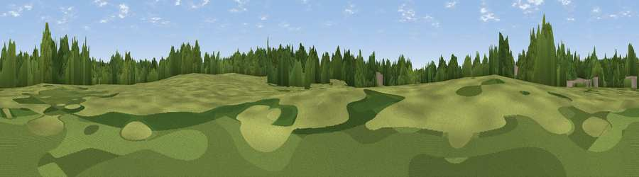

Lady Hill
#41833 in England · top 92% of its area beats it · near EllenbrookThe view, rendered

A 360° render of this exact spot computed from the terrain model, tree cover and land cover — summer colours, afternoon light, calibrated against photographs of famous viewpoints. Real trees, hedges and buildings will differ in detail.
The panorama
Grey silhouette: terrain skyline in each direction (720 bearings, Earth curvature and refraction included). Dashed green: skyline with trees (+15 m) and buildings (+8 m) as obstacles. Blue strip: how far the ground is visible on each bearing.
Where the view opens
Wedge length = distance to the farthest visible ground on that bearing (vegetation-aware). Rings at 10, 25 and 50 km.
What fills the view
44% woodland · 32% grassland · 22% built-up · 2% cropland
Angular shares of the visible panorama (visual magnitude), not map area. Landscape diversity 0.51 (0–1 Shannon).
Key numbers
More beautiful places nearby
The staircase of upgrades: each row has a higher view potential than everything closer. Driving times are estimates from straight-line distance, calibrated against real road routing — check an actual route before setting out.
| Place | Direction | Drive | Score |
|---|---|---|---|
| Little Hulton Greenheys | NW · 4 km | ~10 min | 32.8 |
| Viewpoint near Prestolee | NNE · 5 km | ~12 min | 40.5 |
| Viewpoint near Pendlebury | ENE · 6 km | ~12 min | 42.6 |
| Viewpoint near Pendlebury | ENE · 6 km | ~12 min | 46.3 |
| Viewpoint near Hag Fold | WNW · 7 km | ~14 min | 53.0 |
| Top-o-Cow | NW · 7 km | ~14 min | 57.6 |
| Clarke's Hill | NE · 7 km | ~14 min | 58.1 |
| Viewpoint near Culcheth | SW · 10 km | ~20 min | 63.6 |
53.50742, -2.39910 · source: osm peak · position refined by local search. Computed location — check access rights before visiting.